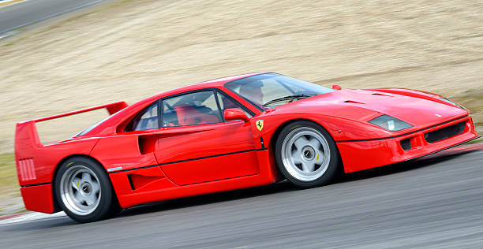
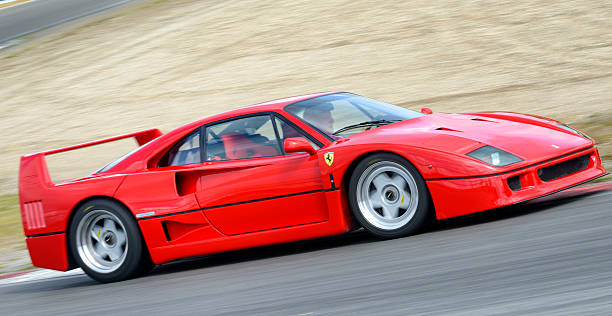
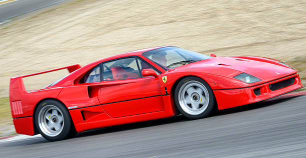

Galeria de Imagens da Ferrari F40


 

Aprecie a beleza e o design impressionante da Ferrari F40 através de uma coleção de imagens selecionadas com cuidado.
A Ferrari F40 é um icônico supercarro fabricado pela renomada fabricante italiana de automóveis Ferrari. Foi produzido de 1987 a 1992 como um tributo ao 40º aniversário da Ferrari e foi projetado para ser um dos carros de rua mais rápidos e potentes do mundo na época de seu lançamento. O desenvolvimento da Ferrari F40 começou no final da década de 1980 sob a supervisão de Enzo Ferrari, fundador da empresa. O objetivo era criar um carro de alto desempenho com um design aerodinâmico e um foco absoluto na velocidade. A Ferrari queria que o F40 superasse seu principal concorrente, o Porsche 959. O projeto da F40 foi liderado por Leonardo Fioravanti, da empresa de design Pininfarina. O carro foi construído com um chassi tubular de alumínio e fibra de carbono para garantir leveza e rigidez. O design externo era agressivo, com linhas angulares e uma asa traseira proeminente para melhorar a estabilidade em altas velocidades. Sob o capô, a Ferrari equipou o F40 com um motor V8 de 2,9 litros com dois turbocompressores. Esse motor produzia impressionantes 478 cavalos de potência e era capaz de acelerar o F40 de 0 a 100 km/h em menos de 4 segundos, com uma velocidade máxima de aproximadamente 320 km/h. Na época, esses números eram extremamente impressionantes. A Ferrari F40 também apresentava um interior espartano, com poucos confortos e luxos, já que seu foco principal era a performance. Os bancos eram de fibra de carbono e o carro não tinha ar-condicionado, rádio ou tapetes, a fim de economizar peso. A produção da F40 foi limitada a cerca de 1.300 unidades, tornando-a um item de colecionador muito desejado atualmente. O preço de venda na época era bastante alto, e a demanda superou a oferta, tornando o carro ainda mais cobiçado. Ao longo dos anos, a Ferrari F40 conquistou um lugar especial nos corações dos entusiastas de automóveis devido ao seu desempenho impressionante, design icônico e história significativa como um dos últimos carros aprovados por Enzo Ferrari antes de sua morte. A Ferrari F40 continua sendo um dos supercarros mais reconhecidos e valorizados até os dias de hoje, com exemplares bem preservados alcançando preços altíssimos em leilões e coleções particulares.

A Ferrari F40 é um icônico supercarro produzido pela Ferrari entre 1987 e 1992. Aqui estão algumas especificações-chave da Ferrari F40: Motor: Motor V8 de 2,9 litros, com configuração biturbo Potência: 478 cavalos (352 kW) Torque: 577 Nm (425 lb-ft) Transmissão manual de 5 velocidades Desempenho: Aceleração de 0 a 100 km/h: cerca de 4 segundos Velocidade máxima: mais de 320 km/h (200 mph) Características: Carroceria de fibra de carbono e kevlar, com painéis de alumínio Peso: aproximadamente 1.100 kg (2.425 lb) Suspensão independente nas quatro rodas Freios a disco ventilados nas quatro rodas Tração traseira Design: Design aerodinâmico agressivo, com spoiler traseiro e difusor Linhas angulares e distintivas, assinatura da Ferrari É importante notar que as especificações podem variar ligeiramente dependendo do ano de fabricação e de configurações específicas do carro. A Ferrari F40 é considerada uma das maiores referências em supercarros e é altamente valorizada por entusiastas e colecionadores de carros esportivos. .

Aprecie a beleza e o design impressionante da Ferrari F40 através de uma coleção de imagens selecionadas com cuidado.